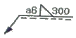
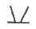
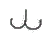
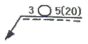
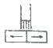
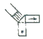
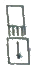

용접산업기사 (2007-08-05 기출문제)
1과목: 용접야금 및 용접설비제도
1. 용착금속이 응고할 때 불순물이 한곳으로 모이는 현상을 무엇이라고 하는가?
- 공석
- 편석
- 석출
- 고용체
(정답률: 69%)

2. 실온 20℃에서 열전도율이 가장 큰 것은?
- Ag
- Fe
- Sn
- Ni
(정답률: 80%)
3. 용접균열은 고온균열과 저온균열로 구분된다. 저온균열(cold cracking) 은 다음 중 몇 ℃ 이하에서 생기는가?
- 약 300℃
- 약 400℃
- 약 500℃
- 약 600℃
(정답률: 90%)
4. 침탄부품을 기밀의 가열로 속에 넣고 적당한 침탄가스를 보내면서 900~950℃에서 침탄하는 방법은?
- 가스침탄법
- 화염침탄법
- 고체침탄법
- 액체침탄법
(정답률: 72%)
5. 탄소강에서 탄소(C)의 함유량이 증가할 경우에 해당하는 것은?
- 경도증가, 연성감소
- 경도감소, 연성감소
- 경도증가, 연성증가
- 경도감소, 연성증가
(정답률: 88%)
6. 면심입방격자(FCC)에서 단위 격자 중에 포함되어 있는 원자수는 몇 개인가?
- 2개
- 4개
- 6개
- 8개
(정답률: 67%)
7. 다음 중 경금속으로 보기 어려운 것은?
- 알루미늄
- 백금
- 마그네슘
- 티타늄
(정답률: 57%)
8. 용접 후 열처리의 목적이 아닌 것은?
- 경화촉진
- 급랭방지
- 균열방지
- 수소량 감소
(정답률: 73%)
9. 퀜칭한 강의 잔류 응력을 제거하고 인성의 개선과 함께 경도를 다소 낮추기 위하여 A1점 이하의 온도로 가열하여 냉각하는 열처리는?
- 고용화 열처리
- 응력제거
- 뜨임
- 불림
(정답률: 37%)
10. 내열합금 용접 후 냉각 중이나 열처리 등에서 발생하는 용접구속 균열은?
- 내열균열
- 냉각균열
- 변형시효균열
- 결정입계균열
(정답률: 36%)
11. 용접부 보조기호 중 제거 가능한 덮개판을 사용하는 기호는?
(정답률: 86%)
12. 용접 기본기호 중 맞대기 이음 용접기호가 아닌 것은?
- II
- V
- Y
- L
(정답률: 79%)
13. 보기와 같은 용접도시기호의 설명으로 올바른 것은?

- 필릿 용접부의 용입 깊이는 6mm이다.
- 필릿 용접을 화살표 반대쪽에서 한다.
- 필릿 용접부의 목 두께는 6mm이다.
- 필릿 용접부의 길이는 200mm이다.
(정답률: 82%)
14. 일반적인 도면을 보관하는 방법 설명으로 틀린 것은?
- 트레이싱도는 접어서는 안되므로 펼친 그대로 수평, 수직 또는 말아서 원통으로 보관한다.
- 복사도는 접어서 보관하므로 접을 때에는 도면의 중앙부가 표면에 오도록 한다.
- 복사도를 접을 때에는 A4 크기로 접는다.
- 마이크로 필름은 영구 보존의 정확성을 기한다.
(정답률: 65%)
15. KS 용접 기호 중 뒷면 용접 기본기호는?


(정답률: 81%)
16. 금속재료의 SF340A 규격에서 340은 무엇을 나타내는가?
- 최저인장강도를 340 kgf/cm2로 나타냄
- 최저인장강도를 340 kgf/mm2로 나타냄
- 최저인장강도를 340 N/mm2로 나타냄
- 최저인장강도를 340 N/cm2로 나타냄
(정답률: 43%)
17. 다음 용접부 비파괴 시험기호 중에서 아코스틱 에 밋션 시험을 의미하는 것은?
- ST
- ET
- VT
- AET
(정답률: 78%)
18. 도형의 표시방법 중 보조 투상도의 설명으로 맞는 것은?
- 그림의 일부를 도시하는 것으로 충분한 경우에 그필요 부분만을 그리는 투상도
- 대상물의 구멍, 홈 등 한 국부만의 모양을 도시하는 것으로 충분한 경우에 그 필요부분만을 그리는 투상도
- 대상물의 일부가 어느 각도를 가지고 있기 때문에 투상면에 그 실형이 나타나지 않을 때에 그 부분을 회전해서 그리는 투상도
- 경사면부가 있는 대상물에서 그 경사면의 실형을 나타낼 필요가 있는 경우에 그리는 투상도
(정답률: 52%)
19. 서로 120도를 이루는 3개의 기본 축에 정면, 평면, 측면을 하나의 투상면 위에서 동시에 볼 수 있도록 나타낸 입체도는?
- 부 투상도
- 등각 투상도
- 사 투상도
- 투시도
(정답률: 87%)
20. KS 스폿용접 기호 중 3 이 의미하는 것은?

- 스폿 길이
- 스폿 개수
- 스폿부의 지름
- 간격
(정답률: 57%)
2과목: 용접구조설계
21. 용접선과 응력의 방향에 수직인 필릿용접은?
- 전면 필릿용접
- 밑면 필릿용접
- 후면 필릿용접
- 병용 필릿용접
(정답률: 79%)
22. 용접이음을 설계할 때 옳은 사항은?
- 맞대기 용접을 될 수 있는 대로 피하고, 필릿용접을 하도록 한다.
- 용접길이는 될 수 있는 대로 길게 하고 용착 금속량도 되도록 최대로 한다.
- 용접이음이 한 곳으로 집중되거나, 접근되도록 한다.
- 결함이 생기기 쉬운 용접 방법은 피한다.
(정답률: 76%)
23. 용접부에 인장, 압축의 반복하중 30 ton 이 작용하는 폭이 600mm 인 두 장의 강판을 I 형 맞대기 용접 하였을 때, 두 강판의 두께가 몇 mm 이면 견딜 수 있겠는가? (단, 허용응력 σa=6.3kf/mm2 로 한다.)
- 약 1mm
- 약 2mm
- 약 6mm
- 약 8mm
(정답률: 35%)
24. 다음 용접결함 중 용접사의 기량과 가장 관계가 없는 것은?
- 슬래그 잠입
- 용입 불량
- 비드밑 터짐
- 언더 컷
(정답률: 63%)
25. 다음 그림과 같은 각종 용접이음의 형상 및 열의 확산(화살표)을 나타낸 것 중 냉각이 가장 빠른 것은?



(정답률: 83%)
26. 용접부의 기공검사는 어느 시험법으로 가장 많이하는가?
- 경도 시험
- 인장 시험
- X 선 시험
- 침투탐상 시험
(정답률: 60%)
27. 탄소강 조직 중에서 경도가 가장 낮은 것은?
- 펄라이트
- 시멘타이트
- 마텐자이트
- 페라이트
(정답률: 61%)
28. 용접설계에서 인장강도의 계산식은?
- 하중/단면적
- 담면적/하중
- 무게/판두께
- 판두께/무게
(정답률: 72%)
29. 연강 맞대기 용접의 완전용입 이음에서 모재 인장강도에 대한 용접 시험편 인장강도의 이음 효율은 보통 얼마인가?
- 100%
- 80%
- 60%
- 40%
(정답률: 56%)
30. 용접이음의 안전율은?
- 안전율=인장강도/허용응력
- 안전율=허용응력/인장강도
- 안전율=이음효율/허용응력
- 안전율=허용응력/이음효율
(정답률: 57%)
31. 다음 중 용접변형 방지법이 아닌 것은?
- 역변형법
- 피닝법
- 휘핑법
- 도열법
(정답률: 69%)
32. 용접부의 잔류응력을 경감시키기 위한 방법이 아닌 것은?
- 저온 응력 완화법
- 응력제거 풀림
- 피닝법
- 냉각법
(정답률: 79%)
33. 다음 중 균열이 가장 많이 발생할 수 있는 용접이음은?
- 십자이음
- 응력제거 풀림
- 피닝법
- 냉각법
(정답률: 58%)
34. 가접시 주의할 사항으로 틀린 것은?
- 본 용접시와 동등한 기량을 가져야 한다.
- 본 용접 보다 훨씬 낮은 온도에서 예열한다.
- 본 용접 보다 약간 가는 용접봉을 사용한다.
- 응력이 집중하는 곳은 피한다.
(정답률: 80%)
35. 용접시 발생하는 각변형의 방지 대책을 잘못 설명한 것은?
- 용접 개선 각도는 작업에 지장이 없는 한 작게 한다.
- 구속지그를 활용하고 속도가 빠른 용접법을 이용한다.
- 판 두께와 개선현상이 일정할 때 용접봉 지름이 작은 것을 이용하여 패스의 수를 많게 한다.
- 역변형의 시공법을 사용하도록 한다.
(정답률: 76%)
36. 용접구조물에서 잔류응력의 영향을 설명한 것 중 잘못된 것은?
- 구속하여 용접을 하면 잔류응력이 감소한다.
- 용접구조물에서 취성파괴의 원인이 된다.
- 용접구조물에서 응력 부식의 원인이 된다.
- 기계부품에서는 사용중에 변형이 발생한다.
(정답률: 54%)
37. 저온 취성 파괴에 미치는 요인과 가장 관계가 먼것은?
- 온도의 저하
- 인장 잔류 응력
- 예리한 노치
- 강재의 고온 특성
(정답률: 60%)
38. 맞대기 이음에서 초층의 용입 불충분 등의 결함 방지 및 제거를 위해 사용하는 방법이 아닌 것은?
- 밑면 따내기(back chipping)
- 백 가우징(back gouging)
- 뒷받침(back plate)
- 버터링(buttering)
(정답률: 63%)
39. 용접지그를 선택하는 기준 설명 중 틀린 것은?
- 청소하기 쉬워야 한다.
- 용접변형 억제할 수 있는 구조이어야 한다.
- 피용접물의 고정과 분해가 어려운 구조라야 한다.
- 작업능률이 향상되어야 한다.
(정답률: 89%)
40. 아크용접시 아크 열효율을 바르게 설명한 것은?
- 용접저항발열양 몇 % 가 모재에 흡수되는가 하는비율
- 용접입열 몇 % 가 모재에 흡수되는가 하는 비율
- 용접금속 열전도율 몇 % 가 모재에 흡수되는가 하는 비율
- 용접금속량 몇 % 가 모재에 흡수되는가 하는 비율
(정답률: 52%)
3과목: 용접일반 및 안전관리
41. 두께 3.2mm 의 연강판을 가스용접하려고 한다. 모재 두께가 1mm 이상일 때 용접봉의 지름을 결정하는 방법에 의한 가스 용접봉의 지름은?
- 1.0mm
- 2.6mm
- 3.2mm
- 4.0mm
(정답률: 50%)
42. TIG 용접으로 알루미늄 용접시 가장 옳은 방법은?
- 직류정극성(DCSP) 사용
- 직류역극성(DCRP) 사용
- 교류(AC) 사용
- 고주파수 교류(ACHF) 사용
(정답률: 60%)
43. CO2 가스 아크 용접에서, CO2 가스가 인체에 미치는 영향으로 극히 위험상태에 해당하는 CO2 가스의 농도는 몇 % 인가?
- 0.4% 이상
- 30% 이상
- 20% 이상
- 10% 이상
(정답률: 48%)
44. 납땜 작업에서 연납땜과 경납땜을 구분하는 온도는 몇 ℃ 인가?
- 500
- 350
- 400
- 450
(정답률: 73%)
45. 불활성 가스 아크 용접시 주로 사용되는 가스는?
- 알곤가스
- 수소가스
- 산소와 질소의 혼합가스
- 질소가스
(정답률: 86%)
46. 아세틸렌 가스의 도관 및 압력 게이지에 사용되는 구리합금 중 구리의 함유량으로 가장 적당한 것은?
- 82% 이하
- 72% 이하
- 62% 이하
- 92% 이하
(정답률: 39%)
47. 전자빔 용접의 장점에 해당되지 않는 것은?
- 예열이 필요한 재료를 예열없이 국부적으로 용접할 수 있다
- 잔류 응력이 적다.
- 용접 입열이 적으므로 열 영향부가 적어 용접변형이 적다.
- 시설비가 적게 든다.
(정답률: 67%)
48. 플라즈마 아크 용접 장치의 구성 요소가 아닌 것은?
- 제어장치
- 토치
- 공기 압축기
- 가스 송급 장치
(정답률: 50%)
49. 압접에 해당되지 않는 것은?
- 저항 용접
- 마찰 용접
- 초음파 용접
- 전자빔 용접
(정답률: 62%)
50. 아크 용접시 작업자에게 가장 위험한 부분은?
- 배전판
- 용접봉 홀더 노출부
- 용접기
- 케이블
(정답률: 87%)
51. 산소 절단법에 관한 설명으로 틀린 것은?
- 예열 불꽃의 세기는 절단이 가능한 한 최대한의 세기로 하는 것이 좋다.
- 수동 절단법에서 토치를 너무 세게 잡지 말고 전후 좌우로 자유롭게 움직일 수 있도록 해야 한다.
- 예열 불꽃이 강할 때는 슬래그 중의 철 성분의 박리가 어려워진다.
- 자동 절단법에서 절단에 앞서 먼저 레일(rail)을 강판의 절단선에 따라 평행하게 놓고, 팁이 똑바로 절단선 위로 주행할 수 있도록 한다.
(정답률: 75%)
52. 피복아크 용접용 기구 및 부속장치에 대한 설명 중 옳지 않은 것은?
- 원격제어 장치는 용접기에서 멀리 떨어진 곳에서도 전류를 용이하게 조정하는 장치이다.
- 전격방지기는 작업중에 감전의 위험을 방지한다.
- 전격 방지기는 용접기의 무부하 전압을 높게 한다.
- 홀더는 가볍고 전기전열이 잘된 안전 홀더를 사용해야 한다.
(정답률: 85%)
53. 가스용접 토치의 팁(Tip) 재료로 가장 적합한 것은?
- 동 합금
- 알루미늄 합금
- 경강
- 연강
(정답률: 64%)
54. 용접법 중 가장 두꺼운 판을 용접할 수 있는 것은?
- 일렉트로 슬래그 용접
- 전자빔 용접
- 서브머지드 아크 용접
- 불활성 가스 아크 용접
(정답률: 62%)
55. 아크 발생열에 의하여 피복제가 분해되어 일산화탄소, 이산화탄소, 수증기 등의 가스 발생제가 되는 가스실드식 피복제의 성분은?
- 규산나트륨
- 셀룰로스
- 규사
- 일미나이트
(정답률: 64%)
56. 용접 접합면에 경사홈을 만드는 이유는?
- 재료 절약과 무게 경감을 위하여
- 용입을 충분하게 하고 강도를 높이기 위하여
- 용접금속의 냉각속도를 빠르게 하기 위하여
- 용접변형이 적게 일어나도록 하기 위하여
(정답률: 82%)
57. 텅스텐 전극봉을 사용하는 용접은?
- 산소-아세틸렌용접
- 아크용접
- MIG 용접
- TIG 용접
(정답률: 89%)
58. 피복아크용접에서 사용되는 피복제의 성분을 작용면에서 분류한 것이다. 그 설명으로 틀린 것은?
- 가스발생제 : 가스를 발생시켜 냉각속도를 빠르게 한다.
- 아크안정제 : 아크발생은 쉽게 하고, 아크를 안정시킨다.
- 합금첨가제 : 용강 중에 합금원소를 첨가하여 그 화학성분을 조성한다.
- 고착제 : 피복제를 단단하게 심선에 고착시킨다.
(정답률: 73%)
59. 정격 2차 전류가 300A, 정격사용율이 40%인 아크용접기로 200A 의 용접전류를 사용하여 용접하는 경우의 허용사용률(%)은?
- 60
- 70
- 80
- 90
(정답률: 51%)
60. 가스용접시 사용되는 불변압식(A형) 토치의 종류가 아닌 것은?
- A1 호
- A2 호
- A3 호
- A4 호
(정답률: 59%)